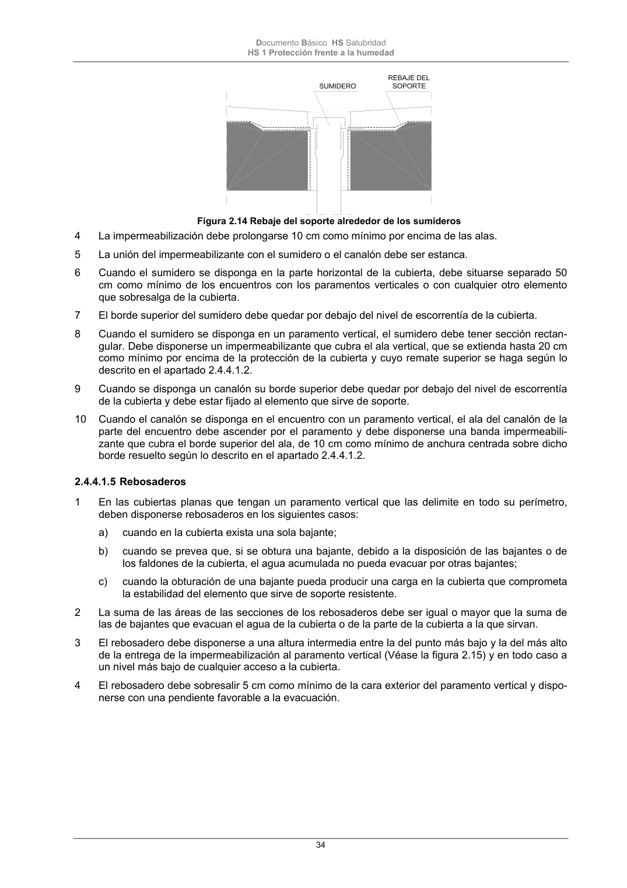
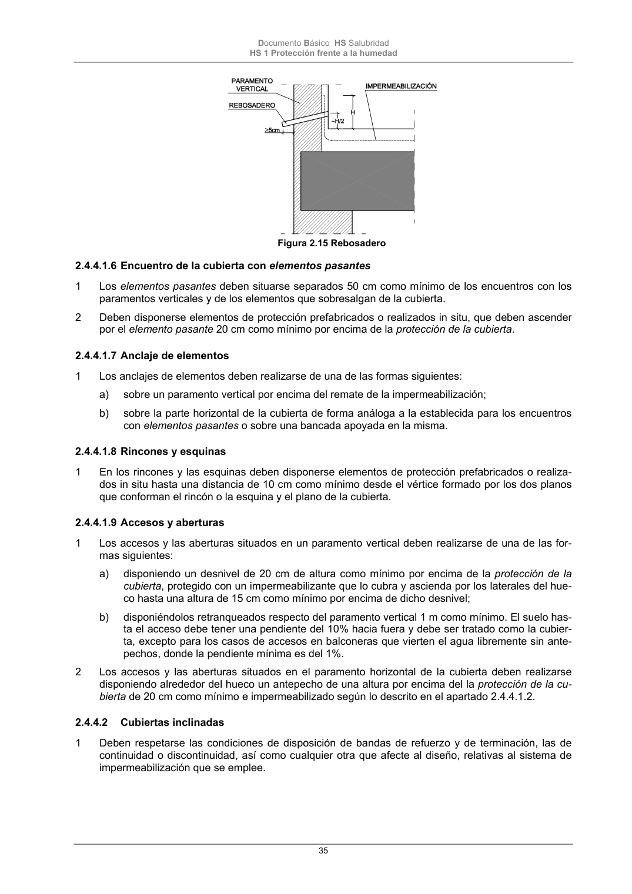

DB-HS Salubridad · edición 2022-06-14 · capa oficial
Documento DB-HS-oficial · SHA-256 del PDF 68df3caacc95f71aee2ec1ba7b2c65ae66155c21e3a8785521b8fdd4fd640d3b
Copia fiel del PDF fuente · Fuente oficial
Ficha de la disposición en la fuente oficial
Formatos: JSON del segmento · Markdown
2.4.4.1.5 Rebosaderos 1 En las cubiertas planas que tengan un paramento vertical que las delimite en todo su perímetro, deben disponerse rebosaderos en los siguientes casos: a) cuando en la cubierta exista una sola bajante; b) cuando se prevea que, si se obtura una bajante, debido a la disposición de las bajantes o de los faldones de la cubierta, el agua acumulada no pueda evacuar por otras bajantes; c) cuando la obturación de una bajante pueda producir una carga en la cubierta que comprometa la estabilidad del elemento que sirve de soporte resistente. 2 La suma de las áreas de las secciones de los rebosaderos debe ser igual o mayor que la suma de las de bajantes que evacuan el agua de la cubierta o de la parte de la cubierta a la que sirvan. 3 El rebosadero debe disponerse a una altura intermedia entre la del punto más bajo y la del más alto de la entrega de la impermeabilización al paramento vertical (Véase la figura 2.15) y en todo caso a un nivel más bajo de cualquier acceso a la cubierta. 4 El rebosadero debe sobresalir 5 cm como mínimo de la cara exterior del paramento vertical y dispo- nerse con una pendiente favorable a la evacuación. Documento Básico HS Salubridad HS 1 Protección frente a la humedad 35 Figura 2.15 Rebosadero

